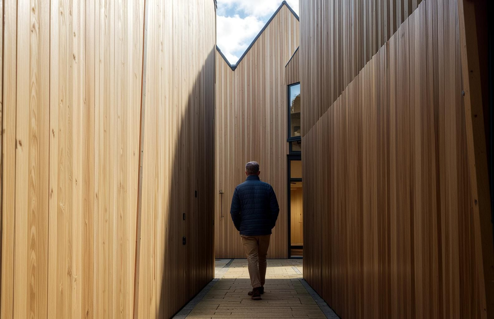
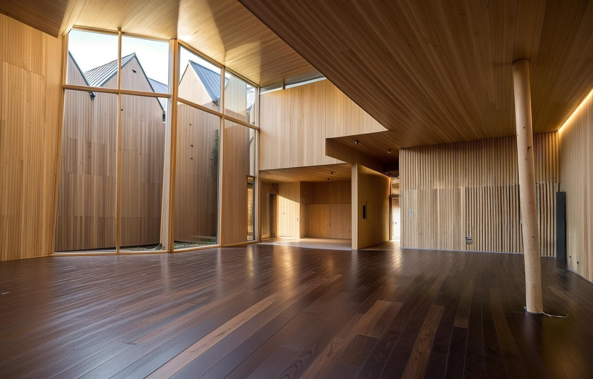

Architecture · Proposal
A proposal for a building for the head of a college at the University of Cambridge, who is called the “Master.” This space, usually little used, is made into a place students can use every day, and planned so that it intertwines with the Master's life like a double helix.
The central garden is a space where plays can be performed. In the outdoor squares of Cambridge, Shakespeare's plays are staged. As in A Midsummer Night's Dream, where ranks are turned upside down, the relationship between the Master and the students is turned upside down, by day and by night. The project asks whether such a relationship could be made.
The images were made by combining my own CG with generative AI.



